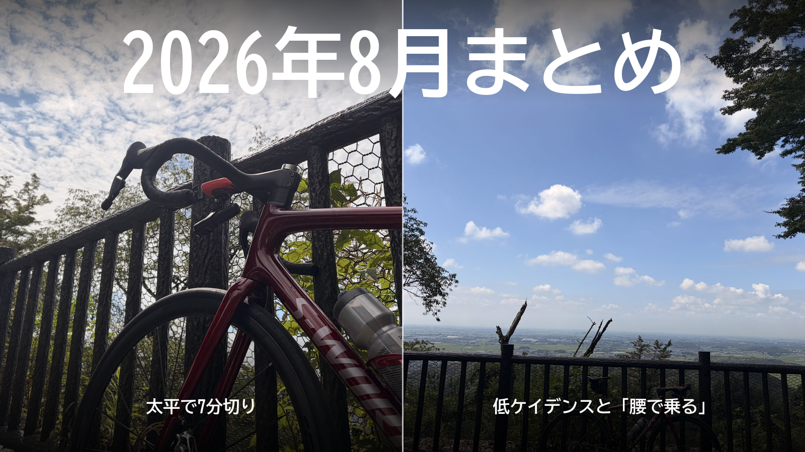

2026年8月まとめ。太平で7分切り、低ケイデンスと「腰で乗る」
8月は、練習の中心が「どれだけ出すか」から「どう出すか」へ移った月だった。大きな出来事は2つ。太平でついに7分を切ったこと。そして、低ケイデンスで「腰で乗る」感覚が見えて、回転数を使い分け始めたこと。

8月の走行距離と時間
外とローラーの内訳
ブログを始めてから初めて、月1,000kmを超えた。7月より約110km、約3時間増え、獲得標高も約1,300m増えた。
トピック1：太平でついに7分を切った
ここでの太平は、当時いつも走っていた時計回りの太平山である。6月から並べるとこうなる。
| 日付 | タイム | 平均 |
|---|---|---|
| 6月23日 | 7分17秒 | 317W |
| 7月9日 | 7分15秒 | 316W |
| 7月30日 | 7分12秒 | 322W |
| 8月4日 | 7分03秒 | 323W |
| 8月10日 | 7分06秒 | 319W |
| 8月17日 | 6分58秒 | 330W |
| 8月25日 | 7分11秒 | 310W |
| 8月31日 | 7分04秒 | 317W |
17日、6分58秒で7分を切った。かなりきつかったが、330Wだから特別にきついという感じではなかった。高い出力に、身体が少しずつ慣れてきたのかもしれない。
25日は、前日にローラーの途中で気持ちが切れた翌日だった。気分は乗らないのに、踏めば310Wが出た。以外と走ればなんとかなるが、それまでがホントに気が重い！！！！
31日は、6月と同じ317Wで約13秒速かった。外なので風や路面は毎回違い、理由は断定できない。それでも、同じ出力でのタイムが、2か月で少しずつ縮んでいる。
トピック2：低ケイデンスと「腰で乗る」
4日、唐沢を80rpm台前半・約290Wで登っていて、「腰で乗る」が少し分かった。骨盤を安定させて、股関節から体重をペダルに乗せる感覚である。ただし、回転を落とせば何でもいいわけではない。
10日はウエット路面で予定を変えた日だったが、80rpm前後のまま約400Wを約2分出せた。力まずに踏める回転の幅が広がってきた。
18日のローラー20分×3では、3本目で高ケイデンスのままだと出力が出なくなり、70〜80rpmまで落として246Wに戻した。
28日の60/30（60秒踏んで30秒休む）では、同じ350W前後でも85rpmと100rpmはまるで別物だった。100rpmを超えると400Wまで簡単に跳ねて、あとに響く。85rpmだと350Wを超えたあたりから重い。60/30なら、今のところ90rpm前後が使いやすそうだ。
高い出力では回転を使い、疲れて高回転が苦しくなれば落としてトルクで踏む。正解の回転数を1つに決めるのではなく、状況で使い分ける方向に変わった月である。
そのほかの練習
1日は白石峠を約29分で登り、そのあと定峰、裏白石、登り返しまで詰め込んだ真夏のロングライドだった。調子に乗って序盤に踏んだら地獄を見た回である。これ終わってから腰で踏む感じが少しづつ分かって来たので、必要なイベントだったのかもしれない。
ゴルビーは、7月の課題だった「揃える」が形になった。8日は5本の差が11W（323〜332W）で、5本目が一番高かった。今までがむしゃらだったのがサイコンを見る余裕ができたのは進化した証だと思う。
新しく60/30を始めた。6日に試した30/30はぬるかったので、11日から60秒ON・30秒OFFへ。26日には、1セット目の振れ幅が19日の21Wから14Wに縮んだ。しかし、定番メニューから外れることに・・・
ローラーのSSTは、12日に259W・254W、27日に251W・249Wで、25分×2の2本の差がいちばん小さくなった。ローラーは未だに実走に及ばない出力である。ローラーくるしい・・・
9月への持ち越し
太平は317〜330Wをもう一度出して、7分前後が偶然でないかを確かめる。60/30は90〜95rpmに揃えて、350〜365Wで2セット。ローラーは18日の20分×3（240〜246W）を255W前後まで上げる。外では290〜300Wを長く踏めるようにする。